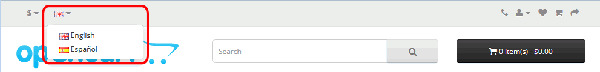

OpenCart
OpenCart es un proyecto de software libre creado en 2005 por Daniel Kerr, un programador británico que trabaja en Hong-Kong. La primera versión estable se publicó en febrero de 2009 y hasta 2017 se publicó más o menos una nueva versión al año (más algunas actualizaciones de seguridad). La versión 4.0 se espera publicar a finales de 2021 o principios de 2022.
Desde julio de 2012, OpenCart se desarrolla en GitHub.
OpenCart se puede ampliar mediante las extensiones disponibles en la OpenCart Extension Store. Las extensiones pueden ser de pago o gratuitas.
En la página web de OpenCart hay una sección dedicada a documentación sobre la aplicación.
Novedades: OpenCart 3.0
Gestión de los idiomas en OpenCart
OpenCart está en inglés, pero se pueden crear tiendas en varios idiomas y que el usuario elija un idioma mediante el selector de idioma que se muestra en la parte superior de la tienda.

Para añadir un idioma a OpenCart, se debe descargar e instalar la traducción correspondiente (véase el ejercicio OpenCart 1-4).
Para añadir un idioma al selector de idioma se debe también habilitar el idioma, ya que OpenCart incluye en el selector de idioma de la tienda únicamente los idiomas habilitados.
El inconveniente de añadir idiomas es que al crear elementos para la tienda (categorías, productos, etc.), OpenCart requiere que se incluya la información en todos los idiomas instalados (independientemente de que estén o no habilitados), por lo que conviene instalar únicamente los idiomas que se vayan a utilizar.
OpenCart permite que el interfaz de administración esté en un idioma distinto del idioma de la tienda. Para ello debemos tener el idioma instalado (para poderlo elegir como idioma de administración), pero debemos tenerlo deshabilitado (para no mostrarlo a los usuarios de la tienda). Eso nos obliga a incluir información en ese idioma de los elementos de la tienda.
 A veces, cuando se deshabilita un idioma, ese idioma deja de pedirse al crear elementos para la tienda, pero parece tratarse de un comportamiento temporal del programa, ya que si se borran los archivos de la carpeta caché (system\storage\cache), vuelve a pedirse la información en el idioma deshabilitado.
A veces, cuando se deshabilita un idioma, ese idioma deja de pedirse al crear elementos para la tienda, pero parece tratarse de un comportamiento temporal del programa, ya que si se borran los archivos de la carpeta caché (system\storage\cache), vuelve a pedirse la información en el idioma deshabilitado.